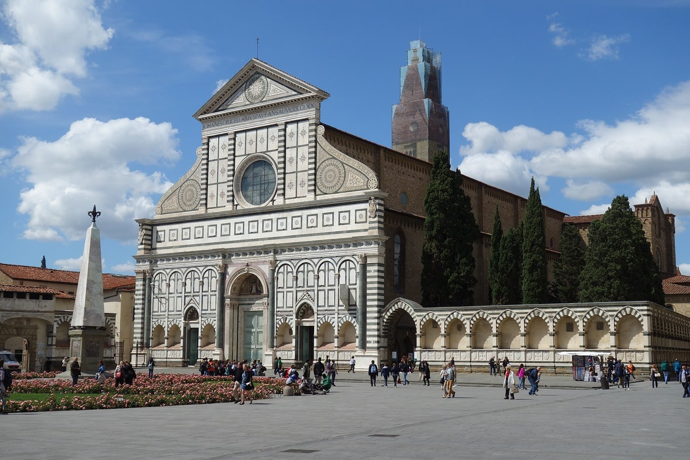

FLORENCIA
Florencia fue en el siglo XIV la cuna de Renacimiento y concentra una cantidad enorme de obras de arte y arquitectura de aquel periodo. Hablaremos aquí de tres de las principales iglesias de Florencia.

Santa Maria del Fiore
La constitucción de Santa Maria del Fiore comenzó en 1296 y prosigió a lo largo del siglo XIV hasta convertirla en la iglesia más grande del mundo en su época. En 1420 comenzó la construcción de la cúpula, todavía hoy la mayor del mundo construida en ladrillo, por el arquitecto Filippo Brunelleschi.
La fachada original de la catedral no se forró hasta la década de 1880, en mármoles blancos,rojos y verdes, similares a los campanario del siglo XIV.
Santa Croce

La basílica de la Santa Croce se construyó en la misma época que Santa Maria del Fiore, en unos terrenos pantanosos entonces situados fuera de las murallas. La fachada neogótica se completó en la década de 1860.
Desde sus inicios, la Santa Croce ha acogido las tumas de destacados florentinos de nacimiento o corazón como Galileo, Maquiavelo, Miguel Ángel o Rossini.
Santa Maria Novella

La iglesia de Santa Maria Novella comenzó a construirse en 1246 y se terminó de construir en 1360, aunque la fachada no se acabó hasta 1470.
Santa Maria Novella forma parte de un complejo religioso que inclute la farmacia más antigua de Europa, fundada en 1221 para uso de los frailes y abierta al público desde 1621.
Basado en información de Wikipedia
Última modificación: 1 de Diciembre del 2016